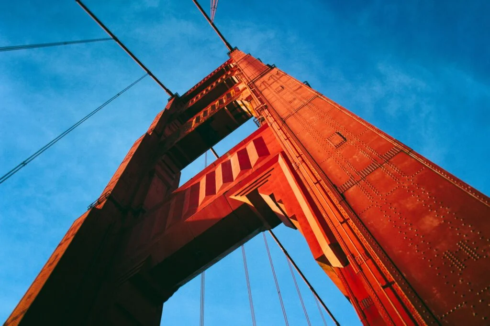

FAMOUS PLACES
Get a taste of the action movie! The attractions listed are famous for the scenes captured in Hollywood movies, TV shows and their history. These locations are the most visited in San Francisco. All captured in movies like "Rise of the Planet of the Apes", "Godzilla", "San Andreas", "Pursuit of Happiness" etc. Dive into history and explore Alcatraz, an island full of mysteries ready to be solved." Famous Places" will take you to another world of happiness!

1. Golden Gate Bridge
Highly visited bridge with a beautiful view of San Francisco. It is well known for its beautiful red color and is California's most visited structure.
History
One of the most iconic bridges in the world was constructed in 1933 and completed on May 22, 1937, a total of four years of construction. The bridge connects San Francisco to Marin County. In 1937, it was listed as the longest bridge on earth until 1964, surpassed by Verrazano-Narrows Bridge in New York City.
Details: Height: 746 feet, Length: 1.7 miles, Lanes/Sidewalk: six driving lanes and two sidewalks; Foot span: 4,200 feet long.

50th Anniversary
In 1987, San Francisco celebrated the Golden Gate Bridge's 50th anniversary inauguration. More than 300,000 people walked across the bridge to celebrate. Approximately 800,000 participated in the event.

View Points
There are multiple locations by the Golden Gate Bridge with beautiful view points to capture.
Visit these view points:
- Fort Point
- Battery Spencer
- Lime Point Historic Lighthouse
- Vista Point
- Golden Gate Panorama View Point
- Golden Gate Observation Deck Hawk Hill
Love Locks
At the beginning of a relationship, a couple will go to Golden Gate Bridge. They obtain a lock, and with that lock they lock it against the fence, symbolizing the beginning of their relationship. Initials of the couple are written on the lock. At the love locks fence there are thousands of locks representing couples' love for each other.
Movies
The Golden Gate Bridge has made its appearances in famous Hollywood movies.
List of movies:
- "The Pursuit of Happyness" 2006
- "Godzilla" 2014
- "San Andreas" 2015
- "Rise of the Planet of the Apes" 2011
- "Star Trek IV: The Voyage Home" 1986
- "A View to a Kill" 1985

2. Painted Ladies
Painted Ladies are homes painted in different colors that have captured the attention of tourists in their San Francisco Visit.
History
Location: 720 Steiner St 710, San Francisco, CA 94115
Learn More
Lombard Street
Location: 1610 Lombard St, San Francisco, CA 94123
Learn More
Muir Woods
Location: 20 Muir Woods Rd, Mill Valley, CA 94941
Learn More
Alcatraz Island
Location: Alcatraz Island
Learn More
Chinatown
Location: Grant Ave, San Francisco, CA 94108
Learn MoreGolden Gate Bridge
Fact: It’s the most photographed bridge in the world